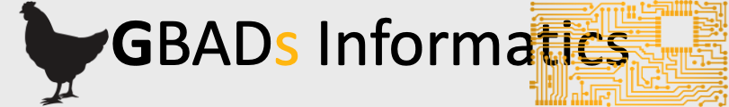

Data Portal API
This link takes you to our Data Portal API where you can learn how to make queries on the GBADs database tables.
Encuentre documentación para usar nuestro portal de datos, motor de conocimiento y herramientas de software
Nuestro sitio tiene manuales, tutoriales, videos y presentaciones que ayudarán con el uso de nuestro acceso al portal de datos a través de API y paneles y herramientas de software en Python y R.
Publicaciones
Todos los artículos, resúmenes y presentaciones de investigación se encuentran aquí, así como información sobre cómo citar nuestro trabajo en formatos compatibles con muchas plataformas y software de publicación.